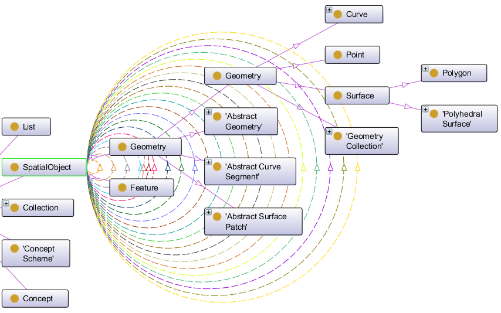
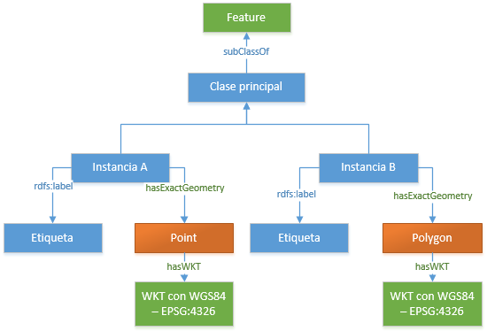

<!DOCTYPE html>
<!--
To change this license header, choose License Headers in Project Properties.
To change this template file, choose Tools | Templates
and open the template in the editor.
-->
<html>
    <head>
        <title>Linked Data Life Cycle - Modelamiento</title>
        <meta charset="UTF-8">
        <meta name="viewport" content="width=device-width">
        <script src="http://code.jquery.com/jquery-1.11.1.js"></script>

        <!-- Siguiente stylo Para controlar Circulo de actividades-->
        <style type="text/css"> 
            body {
                font-family: "Ubuntu", "Trebuchet MS", sans-serif;
                max-width: 100%;
            }
            table {
                border-collapse: collapse;
                margin: 1em auto;
            }

            th, td {
                padding: 5px 10px;
                border: 1px solid #999;
                font-size: 12px;
            }
            th {
                background-color: #eee;
            }
            th[data-sort]{
                cursor:pointer;
            }
            /* just some random additional styles for a more real-world situation */
            #fisttable{
                max-width: 100%;
                alignment-adjust: initial;
                border: 0;
            }
            #msg {
                color: #0a0;
                text-align: center;
            }
            #firsttable2col {
                font-size: medium;
                width: 45%;
            }
            #firsttable1col {
                font-size: medium;
                width: 5%;

            }
            #headtableleft
            {
                width: 40%;
            }
            #headtableright
            {
                width: 60%;
            }
            /* zebra-striping seems to really slow down Opera sometimes */
            tr:nth-child(even) > td {
                background-color: #f9f9f7;
            }
            tr:nth-child(odd) > td {
                background-color: #ffffff;
            }
            .disabled {
                opacity: 0.5;
            }

        </style>
        <!--pARA CONTROLAR CIRCULO DE ACTIVIDADES-->
        <style type="text/css">
            nav {
                position: relative;
                top: 10px;
                left: 140px;
                font-family: helvetica, arial;
            }
            li {
                list-style: none;
            }
            li > a {
                position: absolute;
                text-decoration: none;
                width:95px;
                height:80px;
                border-radius:60%;
                line-height:9.5em;
                text-align:center;
                text-orientation: auto;
                font-family: helvetica, arial;
                background-color: #2D6F81;
            }
            a[id|="actual"]
            {
                font-family: helvetica, arial;
                background-color: #792F2E;

            }
            li > a:link, li > a:visited {
                color: #eee;
                font-size: 9px;

            }
            a:hover {
                font-size: 11px;
                font-weight: bold;
            }

            #droparea { width: 20px; height: 50px; padding: 6%; text-align: center; }
        </style>    
    </head>
    <body>
        <script>
            // Your code goes here.
            $(function() {
                circle_radius = 80;
                $links = $('nav ul.gallery li a');
                total_links = $links.size();
                $links.each(function(index) {
                    $(this).attr('data-index', index);
                    animateCircle($(this), 1);
                });
                $('ul.gallery > li a').hover(function() {
                    animateCircle($(this), 1.2);
                }, function() {
                    animateCircle($(this), 1);

                });

                // let the gallery items be draggable
                $("ul.gallery > li a").draggable({
                    revert: "invalid", // when not dropped, the item will revert back to its initial position
                    containment: "document",
                    helper: "clone",
                    cursor: "move"
                });

                // let the trash be droppable, accepting the gallery items
                $("#droparea").droppable({
                    accept: "ul.gallery > li a",
                    activeClass: "ui-state-highlight",
                    drop: function(event, ui) {
            //            alert('dropped');
                        //deleteImage( ui.draggable );
                    }
                });


                function animateCircle($link, expansion_scale) {
                    index = $link.attr('data-index');
                    radians = 2 * Math.PI * (index / total_links);
                    x = -(Math.sin(radians) * circle_radius * expansion_scale);
                    y = -(Math.cos(radians) * circle_radius * expansion_scale);
                    $link.animate({
                        top: x + 'px',
                        left: y + 'px'
                    }, 600);
                }
            });
        </script>
        <div>
            <table align="left">
                <tr>
                    <td id="headtableleft" style="border: 0">
                        <nav>
                            <div id="droparea">
                                <a href="index.html"></a>
                            </div>
                            <ul class="gallery">
                                <li><a href="EXPLOTACION.html" title="ACTIVIDAD NUMERO 5">EXPLOTACION</a></li>
                                <li><a href="ESPECIFICACION.html" title="ACTIVIDAD NUMERO 1">ESPECIFICACION</a></li>
                                <li><a id="actual" href="MODELAMIENTO.html" title="ACTIVIDAD NUMERO 2">MODELAMIENTO</a></li>
                                <li><a href="GENERACION.html" title="ACTIVIDAD NUMERO 3">GENERACION</a></li>
                                <li><a href="PUBLICACION.html" title="ACTIVIDAD NUMERO 4">PUBLICACION</a></li>
                            </ul>
                        </nav>
                    </td>
                    <td id="headtableright"  style="border: 0">
                        <a href="index.html"></a>
                    </td>
                </tr></table>
        </div>
        <div align="left">
            <table id="fisttable" align="left">
                <tr>
                    <td id="firsttable1col" style="border: 0">
                        <!--         -->
                    </td>
                    <td id="firsttable2col" style="border: 0; text-align: justify">
                        <FONT FACE="arial" SIZE=2>El objetivo de esta actividad es definir las ontologías que nos permiten modelar y organizar la información que se va a generar en 
                        formato RDF.En este proyecto hemos trabajado con el estándar GEOSPARQL que define un modelo de datos con
                        información geoespacial. Ademas incorpora una extension a Sparql que ofrece una serie de funciones para consultas Geospaciales, donde también se estableció utilizar el formato WKT para
                        definir la geometría de cada recurso proveniente de las fuentes de información.</FONT>
                    </td>
                </tr>
            </table>  
        </div>
        <div style="text-align: justify" align="left">
            <p><FONT FACE="arial" SIZE=2>La siguiente Figura muestra un extracto de la ontología  GEOSPARQL, donde se observa
                en primera instancia la herencia de clases. Las clases usadas más importantes
                son: la clase Point (representación de puntos) y la clase Polygon (representación de
                polígonos). Además, las líneas circulares que posee la clase SpatialObject son propiedades
                que se aplican así mismo, por ejemplo la propiedad intersects que permite
                conocer si dos geometrías se llegan a cruzar. Al ser las clases Point y Polygon, hijas
                de SpatialObject, también heredan sus propiedades, así que cualquier polígono o
                punto, también tienen su propiedad intersect.</FONT>
            </p>
            <center></center>
            <p><FONT FACE="arial" SIZE=2>
                No todas las clases de la ontología GEOSPARQL son usadas ya que no han sido
                necesario. Para tener una mejor idea de las clases utilizadas, En la siguiente Figura 
                se muestra un ejemplo de una ontología que tiene un punto y un polígono, y
                que además, muestra los atributos que se usan entre las diferentes clases. Se dispuso
                un gráfico con colores diferentes para resaltar lo siguiente:</FONT></p>
            <ul><FONT FACE="arial" SIZE=2>
                <li>Verde: clases o atributos propios del estándar GEOSPARQL.</li>
                <li>Naranja: clases del estándar de figuras simples. GEOSPARQL los usa para la
                    representación de geometrías.</li>
                <li>Azul: clases o datos definidos por el usuario. En el caso de la clase principal y sus
                    instancias, tienen un formato estándar (ya que heredan de la clase Feature);
                    pero en el caso de las etiquetas, es un dato adicional no estándar (ya que
                    GEOSPARQL no lo menciona) pero que es de mucha utilidad ya que dota de
                    significado a la geometría.</li></FONT>
            </ul>
            <p><FONT FACE="arial" SIZE=2>
                Para el caso práctico, las etiquetas serán llenadas con la información
                que contiene una determinada columna, de preferencia donde cada dato de la columna
                sea único. Por ejemplo, si se trabaja con ShapeFiles de provincias, la columna clave
                será el nombre de las provincias, puesto que generalmetne son unicos. Se podrá igualmente elegir
                alguna columna que no aporte mucho significado, como por ejemplo, un ID, pero eso
                no ayudar  a conocer a simple vista con qué dato se esta trabajando.</FONT>
            </p>     
            <center></center>


        </div>

    </body>
</html>
